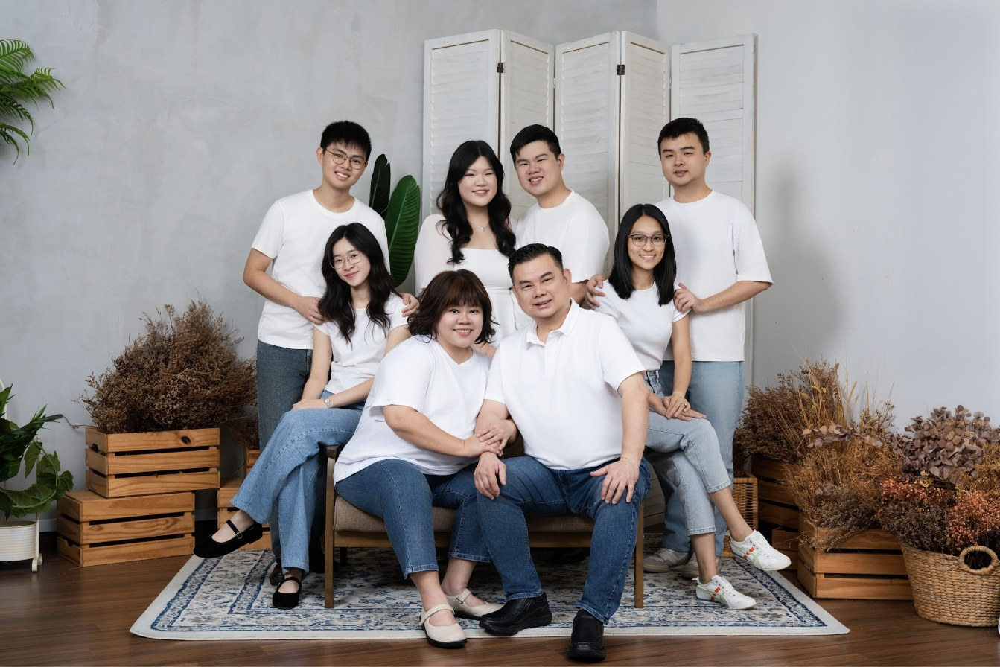
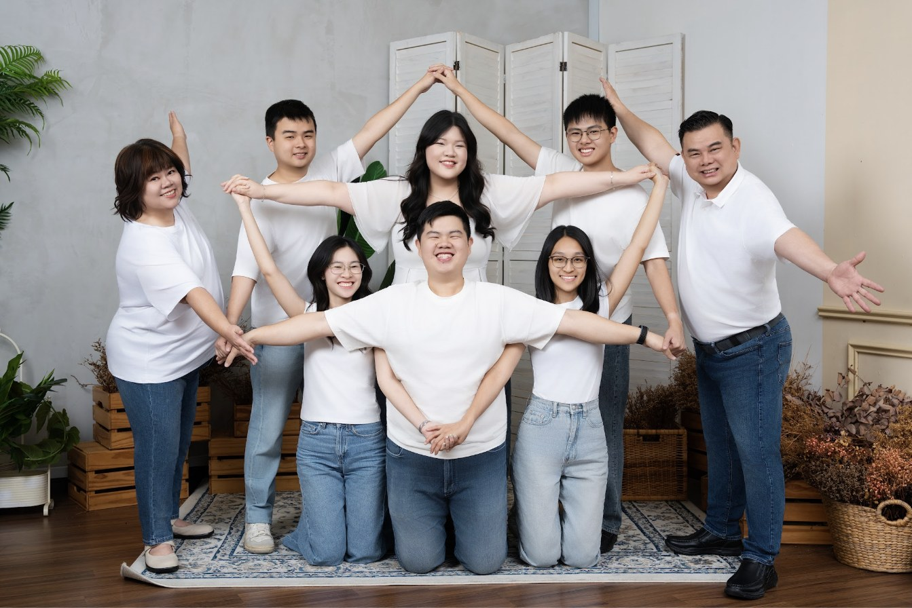
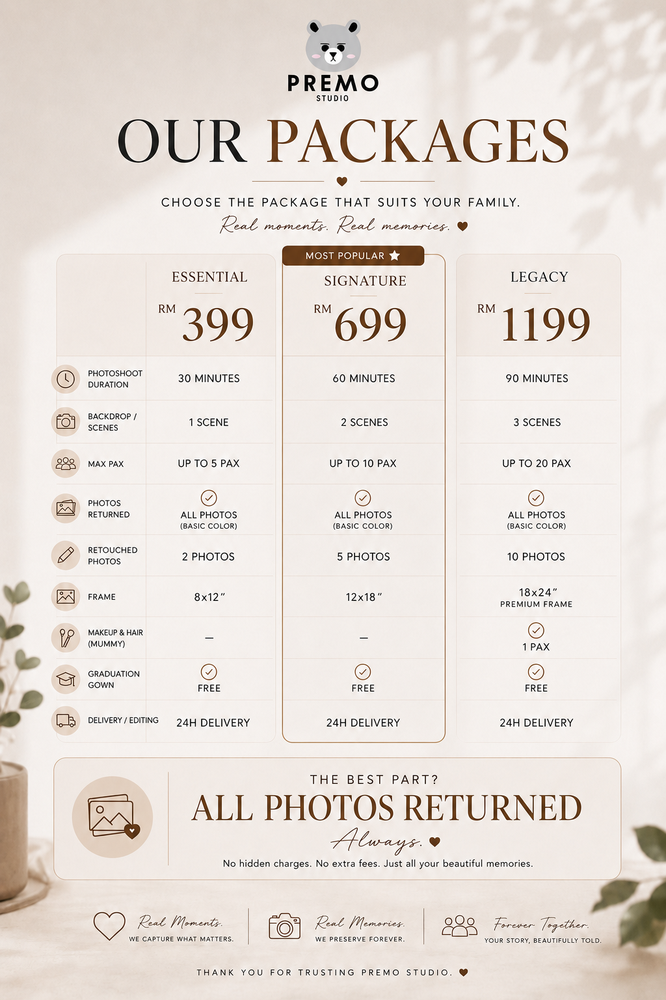

无论是农历新年团圆、长辈生日、还是单纯想留下一家人此刻的样子，Premo Studio 吉隆坡Old Klang Road总店，能为你安排一场轻松、不赶场的全家福拍摄。From Chinese New Year reunions to a grandparent's birthday, our Kuala Lumpur studio offers relaxed, unhurried family portrait sessions.


家人聚在一起的时刻，往往比想象中少——尤其是长辈、兄弟姐妹各自成家之后。一张用心拍摄的全家福，不只是照片，也是很多年后回头看，会让全家人一起笑出来的记忆。比起手机随手一拍，专业影棚在灯光、构图、每个人的表情与站位安排上都能兼顾，让每个成员在照片里都好看、都在场。Moments with the whole family together are rarer than you'd think. A thoughtfully shot portrait becomes the photo everyone laughs over years later — professional lighting and posing make sure every person looks their best.
全家福最容易失败的地方不是表情，是「穿搭对不上」。建议全家人选定 1–2 个协调的色系（例如米白＋大地色、或深蓝＋灰），避免全员穿纯白或纯黑撞成一片色块，也避免太多不同鲜艳颜色互相抢镜。如果不确定怎么搭，可以在预约时告诉我们家庭人数与年龄层，我们可以给穿搭方向建议。Mismatched outfits sink more family portraits than expressions do. Pick 1–2 coordinated tones (cream + earth, or navy + grey) — avoid everyone in plain white or black, and avoid too many clashing bright colours. Tell us your family's size and ages when booking and we'll suggest a direction.
以下为限时优惠价格，实际价格请以预约时门店最新公告为准。Limited-time offer pricing shown below — please confirm current pricing when booking.
